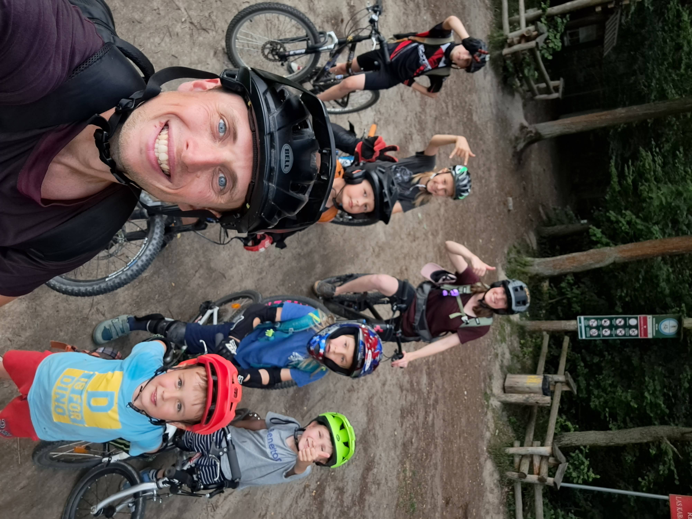

Kolarstwo grawitacyjne to jazda na rowerze, gdzie używamy siły grawitacji (ciążenia) do zdobywania prędkości. Zamiast pedałować pod górę, zjeżdżamy z góry w dół!
Rodzaje kolarstwa grawitacyjnego:
🏔️Downhill (DH) Szybka jazda z góry na dół po stromych trasach z przeszkodami. To najszybszy rodzaj kolarstwa górskiego!
🚵Freeride Jazda po naturalnych przeszkodach jak kamienie, korzenie i dziury. Dużo kreatywności w wyborze trasy!
🏗️Dirt jumping Skoki na specjalnie zbudowanych skokach z ziemi. Można wykonywać triki w powietrzu!
Jak ja trenuję
Żeby być dobrym w kolarstwie grawitacyjnym, trenuję w trzech różnych miejscach:
🏁Pumptrack Tor z falistymi zakrętami gdzie uczę się pompować rowerem bez pedałowania. Buduję prędkość używając tylko ciała!
🛹Stoliki (skakanie) Małe, bezpieczne skoki do nauki podstaw. Uczę się startować, latać i bezpiecznie lądować.
⬇️B-line Prosta trasa downhillowa gdzie uczę się jeździć szybko i bezpiecznie. Doskonalę technikę hamowania.
🏁 Pumptrack - moje ulubione miejsce treningu
Co to jest pumptrack?
To zamknięty tor z pagórkami i zakrętami, gdzie można jeździć bez pedałowania! Wystarczy "pompować" - "wyciskać" nogami w odpowiednim momencie.
Dlaczego lubię pumptrack?
Można jeździć w kółko i ćwiczyć ile chcę
To bezpieczne miejsce do nauki nowych rzeczy
Można jeździć z przyjaciółmi i urządzać wyścigi
Co mi daje jazda na pumptrack?
Lepszą równowagę na rowerze
Siłę w nogach i całym ciele
Umiejętność czytania terenu
Zobacz jak trenuję na pumptrack!
🛹 Stoliki - uczę się skakać
Co to są stoliki?
To małe, bezpieczne skoki które mają płaski wierzch - jak stolik! Są idealne do nauki podstaw skakania na rowerze.
Czego się uczę na stolikach?
Jak prawidłowo wybić się przed skokiem
Jak utrzymać równowagę w powietrzu
Jak bezpiecznie wylądować na tylnym kole
Jak kontrolować rower podczas lotu
Dlaczego zacząłem od stolików?
Są bezpieczne dla początkujących
Można stopniowo zwiększać wysokość skoków
Budują pewność siebie
Moja nauka skoków na stolikach!
⬇️ B-line - moja pierwsza trasa downhill
Co to jest B-line?
To łatwiejsza wersja trudnej trasy downhill. Jest mniej stroma i ma mniejsze przeszkody. Idealna do nauki szybkiej jazdy z góry!
Czego się uczę na B-line?
Kontroli prędkości na stromym terenie
Właściwego hamowania w odpowiednich momentach
Wyboru najlepszej linii jazdy
Omijania przeszkód
Dlaczego B-line jest ważny?
Przygotowuje mnie do trudniejszych tras
Uczy bezpiecznej jazdy downhill
Buduje doświadczenie i pewność siebie
Moja jazda na trasie B-line!
🛡️ Odpowiedni strój - bezpieczeństwo przede wszystkim
🪖 Kask - ZAWSZE na głowie!
Chroni przed upadkami. Do downhill używam kasku fullface (pełnego) który chroni całą głowę i twarz.
🦴 Ochraniacze - moja zbroja:
Kręgosłup: Ochraniacz pleców lub kamizelka ochronna
Kolana: Długie ochraniacze kolan
Łokcie: Ochraniacze łokci
Dłonie: Rękawice z długimi palcami
Mocne buty (najlepiej specjalne do kolarstwa)
Dlaczego ochraniacze są ważne? Chronią przed zranieniem, dodają pewności siebie i pozwalają na odważniejszą jazdę!
🏆 Mój trener - Bartek

🌟 Dlaczego Bartek jest świetnym trenerem?
Jest cierpliwy i wyjaśnia wszystko krok po kroku
Zawsze dba o moje bezpieczeństwo
Motywuje mnie do próbowania nowych rzeczy
Ma dużo doświadczenia w kolarstwie górskim
Sprawia, że nauka jest zabawna!
🎬 Film promocyjny o kolarstwie grawitacyjnym
Zobacz jak wspaniałe jest to hobby!
To może być Twoja przygoda! 🚵♂️✨
🚵♂️ Dlaczego kocham kolarstwo grawitacyjne?
To co lubię najbardziej:
Jest ekscytujące i pełne adrenaliny
Cały czas uczę się nowych rzeczy
Poznaję fajnych ludzi w lesie
Spędzam czas na świeżym powietrzu
Czuję się wolny na rowerze
Czy ty też chciałbyś spróbować kolarstwa grawitacyjnego?